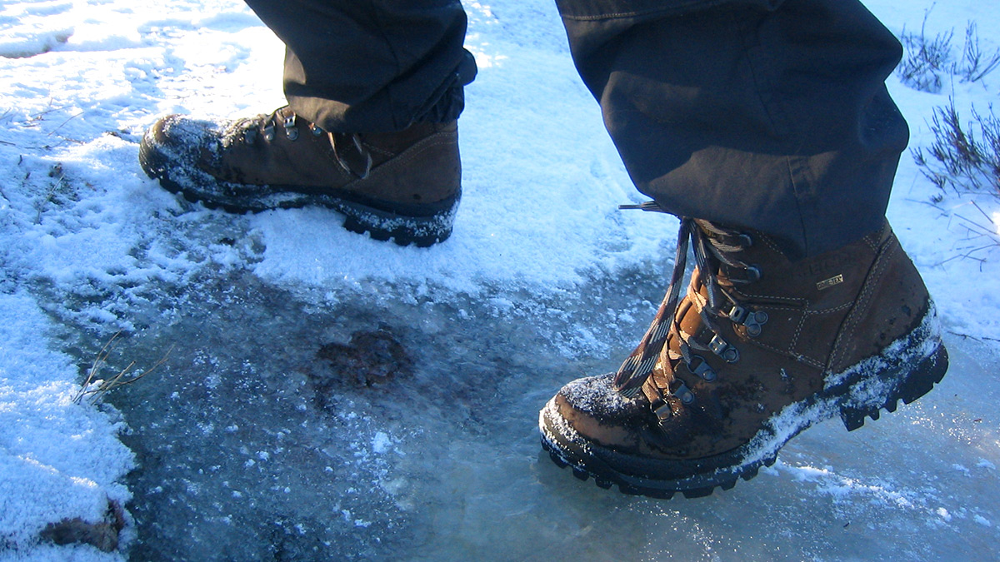

Näin pysyt pystyssä liukkaalla talvikelillä
Työmatkatapaturmia sattuu eniten marras-maaliskuun välillä, kun talvi on parhaimmillaan ja kelit liukkaita. Liukastumisista aiheutuvia tapaturmia on helppo estää omalla toiminnalla ja valinnoilla. Tänään käynnistyvä Pysy pystyssä -kampanja tuo vinkit liukastumisen välttämiseen. 